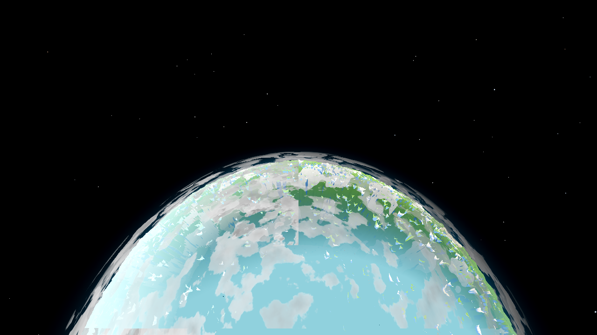
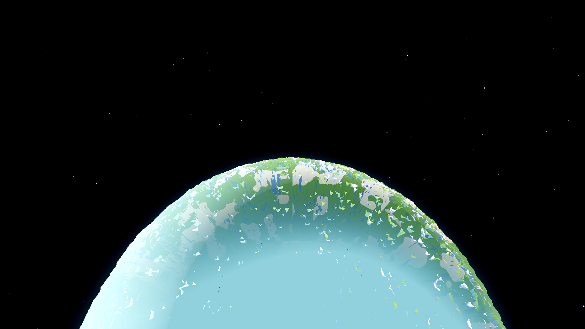
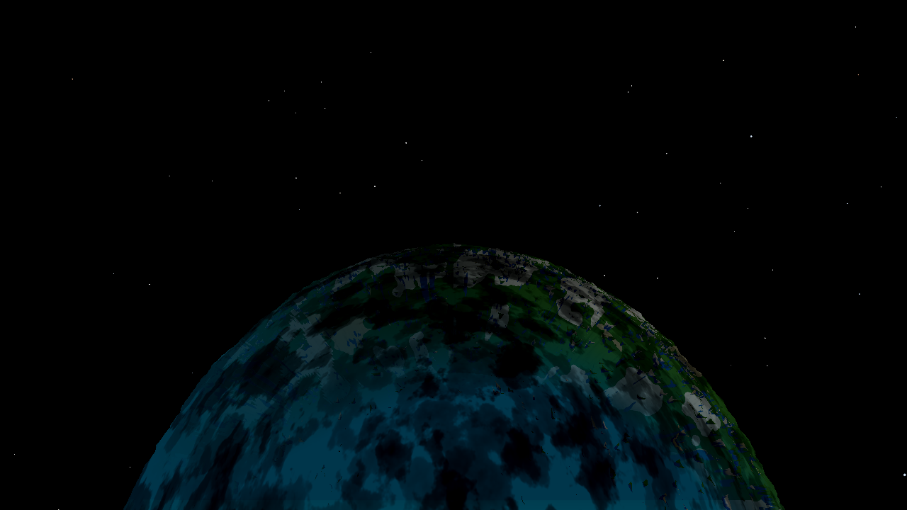
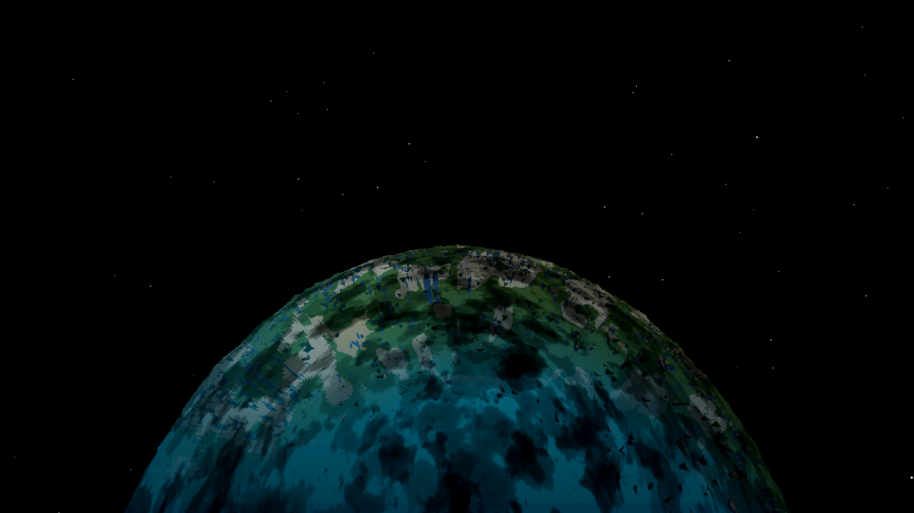
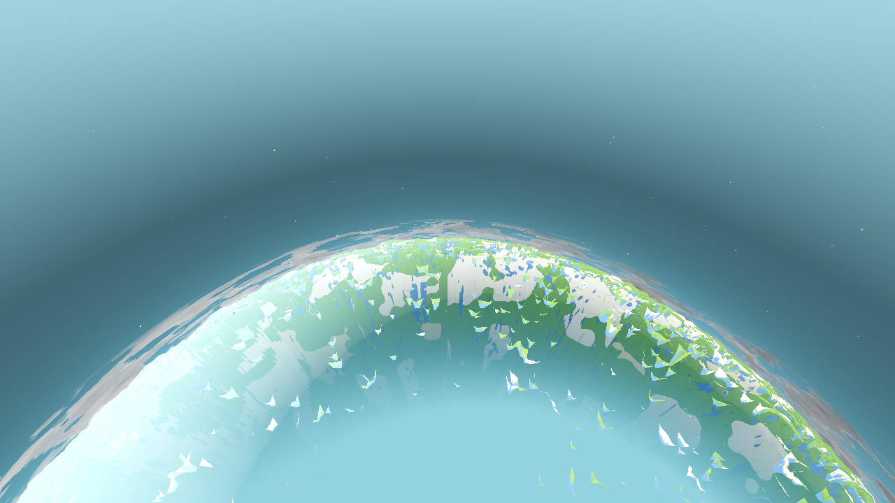
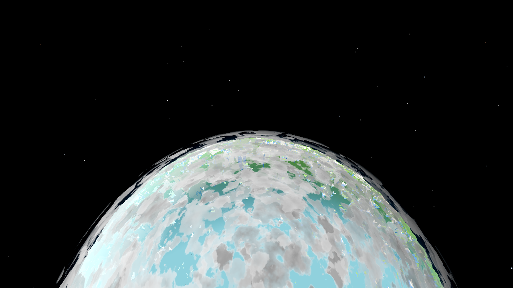
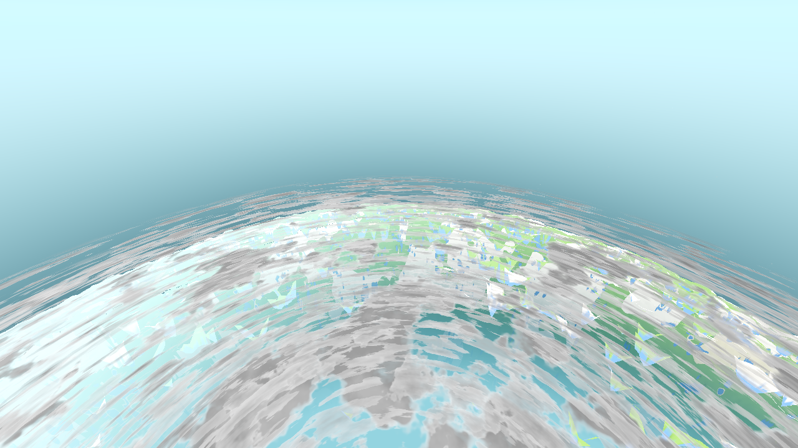
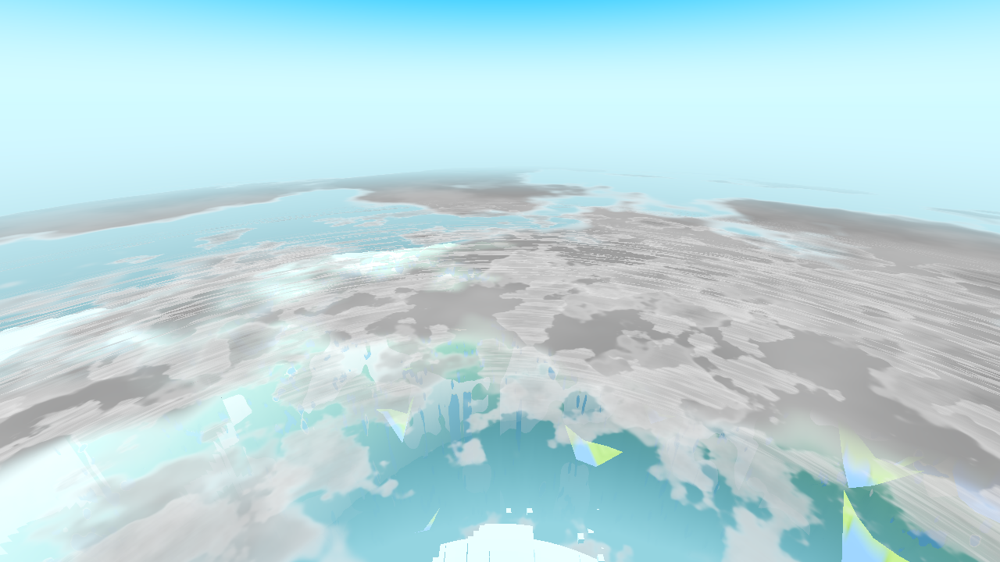

AC-0384 grey ball (r9 deck, T0.5 overcast) — the reported defect

Default deck, T0.5, sparse phase — saturated terrain with volumetric masses

PLAN: plan.html · CONTINUITY: continuity.md · TREE: HEAD 680a830 (AC-0401 closed) + the uncommitted AC-0401 leftover / parallel-session hunks (settings/menu/near-field shaders, as measured by the AC-0384 §25 assessment era) + this task's D4 change. Fence files untouched.
| # | User item | What was found / done | Status |
|---|---|---|---|
| D5 | “AT SOME TIMES OF DAY THE PLANET RENDERS AS A PALE GREY BALL” (disc centre 184,184,184 at T0.5 vs 49,99,46 at T0.3, 2600 m) | None of the three pale-planet causes. (1) the uncompiled shader drew a 255-white Lambert ball and is long fixed; (2) the fog term repaints the disc in the fog colour (cyan, 177,240,255-class) and is fixed; (3) the body's day/night re-weight is exactly identity at the T0.5 nadir — albedo × (0.18 + 0.82·day·sun_l) = ×1.0, proven by the fresh clouds-OFF render: the body-only T0.5 disc centre is (144,209,221) sat 77, full saturated terrain. The grey is a fourth, independent cause: the cloud deck's overcast phase — cloud_amount = 0.30 + 0.45·day peaks at 0.75 by day, and a deck mass over the nadir reads as a neutral veil (the AC-0384 capture measured (221,221,221) sat 0 in the old r9 character; the r9 flat blanket now only exists with cloud_deck OFF). Already addressed by AC-0401's re-characterised deck (default ON): the same T0.5 nadir is saturated teal (144,209,221) with the default deck, the masses are volumetric (grey cores, soft edges) with clear terrain gaps, and the sweep shows the disc centre carrying the terrain's hue at every time of day (dark at night, teal at dawn/dusk). Residual: in a DENSE drift phase a mass sits over the nadir and the centre reads the cloud's neutral grey ((201,201,201) sat 0 measured) — weather over the planet, the body underneath proven saturated (clouds-OFF render); the old featureless 221-grey ball is gone from the default path. Per the ticket's stop-and-report clause: reported, no deck change (a “keep the nadir open” weather rule or a lower day coverage is the named follow-up). |
FINDING — already addressed by AC-0401 (default ON); measured across the sweep; no change |
| D4 | “the sky-to-space transition is short… does not respond to altitude… space term 0.13→0.92 between 700–1600 m, fully black by 1600 m” — “landing on and leaving a planet should feel and look like No Man's Sky” | The sky's BACKGROUND blend rode the physics flight-band S (500–2000 m), which is a band, not a climb. Fix: the background now blends on u_space_sky (pushed per frame by world.gd _ac0401_push) with a stretched window — the SAME radial altitude, window BAND_WALK_MAX .. BAND_FLY_MIN×1.6 (500–3200 m, read off the live player's constants) — so S_sky ≈ 0.04 / 0.44 / 0.92 at the 700 / 1600 / 2600 m frames: the blue thins gradually over the whole climb instead of snapping to black at 1600 m. The ladder now carries a distinct state at every step (inside the weather → bright air → slightly thinned air → deep blue mid-climb → near-space with a thin horizon haze + full limb rim). The limb-glow gate, the star opacity and the sun-glow fade keep riding the physics S (the AC-0386/AC-0401 contracts) — unchanged. Behind sky_altitude (default ON; env AWECRAFT_SKYALT): OFF makes the ws expression exactly the pre-AC-0402 one — proven by render: the 2600 m OFF frame's sky is pixel-identical to the pre-AC-0402 frame, and the 300 m ON frame's sky is pixel-identical to the pre-AC-0402 tree's frame (the window is 0 there). |
DONE — switch-gated, renders |
| T0 | day(t) | cloud_amount | Disc centre — default deck (this task's sweep) | Disc centre — body only (CLOUDS=0, T0.5) | Reading |
|---|---|---|---|---|---|
| 0.0 | 0.0 | 0.30 | win60 (1.2, 2.0, 1.2) — nadir point (0,0,0) = the baked fixed-sun shadow × 0.18 night floor, quantised to black; the render shows the dark structured world (green landmasses readable) | T0.5 only: centre (144,209,221) sat 77 — full saturated terrain (the body's factor is exactly 1.0 at the T0.5 nadir) | dark night world, not grey |
| 0.25 | 0.343 | 0.454 | win60 (0, 15.0, 26.2) sat 26 — dawn teal terrain | saturated (dark) terrain | |
| 0.5 | 1.0 | 0.75 | phase-dependent: sparse phase (144,209,221) sat 77 (AC-0401 acceptance frame); dense overcast phase (201,201,201) sat 0 (this task's sweep frame — a mass over the nadir; the body underneath is the same (144,209,221), CLOUDS=0) | saturated terrain; grey only as weather | |
| 0.75 | 0.343 | 0.454 | win60 (0, 27.8, 39.1) sat 39 — dusk teal terrain | saturated (dark) terrain |
The AC-0384 grey ball (184/221,221,221 sat 0, featureless) is the OLD r9 deck character at the same T0.5 overcast phase — ac0384-final-descent-2600.png = ac0401-deckoff-2600.png (the deck-OFF A/B of the current tree, same weather): both (221,221,221) sat 0 at the centre. The r9 blanket now requires cloud_deck OFF; the default (ON) deck is the volumetric character.
AC-0384 grey ball (r9 deck, T0.5 overcast) — the reported defect
Default deck, T0.5, sparse phase — saturated terrain with volumetric masses
Default deck, T0.5, dense overcast phase (this task's sweep) — the residual weather state; grey = the cloud, terrain in the gaps

Body only (CLOUDS=0), T0.5 — the body is fully saturated at noon (factor = 1.0)

The AC-0402 (after) tree reproduces the same terrain hue at the dawn/dusk steps (the deck is untouched by AC-0402, so before/after deck states are the same tree): T0.25 disc centre (0,38,54) sat 54, T0.75 (1,60,75) sat 74 — saturated teal, dark, never grey.
T0.25 dawn — BEFORE (current tree)
T0.25 dawn — AFTER (sky on, S_sky=0.923): terrain hue intact, sky near-space

T0.75 dusk — BEFORE (current tree)

T0.75 dusk — AFTER: saturated teal world, black-to-space sky
S = the physics flight-band value (500–2000 m; the assessment's ladder, alt_rad = 141 + SAT_ALT from the spawn-radial camera). S_sky = the stretched-window value this task pushes (500–3200 m). Sky state = measured sky band (region above the deck edge on the centre column): mean luminance, dark fraction, top-of-frame sample.
| SAT_ALT | S (phys) | S_sky (new) | BEFORE sky (AC-0401-era tree) | AFTER sky (this task) |
|---|---|---|---|---|
| 120 | 0.00 | 0.000 | inside the outermost deck shell — no sky region (frame fills with weather) | same (window 0 below 500 m): inside the deck, sky_top = the cloud (196,196,196) — the low approach is the weather, before and after |
| 300 | 0.00 | 0.000 | band lum 242.9, 0% dark, top (139,239,255) (AC-0401-era frame — see the era note below) | band lum 231.8, 0% dark, top (96,217,255) — pixel-identical to the AC-0401-era frame (window = 0: bit-identical old sky, diff = 0 px) |
| 700 | 0.13 | 0.044 | band lum 226.9, 0% dark, top (209,250,255) | band lum 223.5, 0% dark, top (209,250,255) — effectively unchanged (4% blend) |
| 1600 | 0.92 | 0.440 | band lum 0.0, 100% dark, top (0,0,0) — fully black | band lum 148.1, 0% dark, top (151,201,212), edge (74,125,139) — deep blue mid-climb with a vertical gradient (profile 193→98), stars on a blue field |
| 2600 | 1.00 | 0.923 | band lum 0.0, 100% dark, top (0,0,0) — fully black to the rim | 92% space: top (0,0,0), but a thin deep-blue haze ramp (lum 0→18, (0,9,18)-class) now descends into the full limb rim across y 309–324 (before: pure black to the rim) — “space with the atmosphere's memory” |
Before reference note: the ticket's designated before set is the AC-0384 final-descent captures. At 300 m the AC-0384-era sky already differs from the AC-0401-era (pre-AC-0402) sky (mean Δ ~30 sRGB, R-biased — a pre-existing tree-era difference, NOT this task: my 300 m ON frame is pixel-identical to the AC-0401-era frame, and my 2600 m OFF frame is pixel-identical to the pre-AC-0402 sky). The AC-0401-era frames are therefore the correct “before” for the 300/1600/2600 rows; the AC-0384 700 m frame carries over (no sky-affecting tree change measured there: my 700 m ON top sample is identical to it).
BEFORE 1600 m — fully black sky (S=0.92, the band completes at 1600 m)

AFTER 1600 m — deep blue mid-climb (S_sky=0.44), limb rim, stars on blue

BEFORE 2600 m — black to the rim (the skyalt0 control frame, sky pixel-identical)

AFTER 2600 m — near-space with the thin horizon haze into the rim (S_sky=0.92)

AFTER 700 m — bright air, effectively unchanged (S_sky=0.044): the ground-level sky is preserved

AFTER 300 m — bright air, pixel-identical sky to the pre-AC-0402 tree (S_sky=0)

| Setting | Default | Effect | Short-circuit (proven by render) | Env override |
|---|---|---|---|---|
sky_altitude (new, D4) | ON (the user story asked for it — the modern_light/cloud_deck/limb_space precedent) | background blend on u_space_sky (stretched window 500–3200 m alt_rad, per-frame push from the live player's band constants) | u_sky_alt = 0: ws = mix(x, y, 0) = x = the exact pre-AC-0402 expression; the per-frame push is skipped (short-circuit before the work). Render-proof: 2600 m OFF frame's sky pixel-identical to the pre-AC-0402 frame (diff bbox starts exactly at the deck edge); 300 m ON frame pixel-identical to the pre-AC-0402 tree's sky | AWECRAFT_SKYALT=0|1 |
cloud_deck (existing — D5 rides it) | ON (AC-0401) | the re-characterised deck (the grey-ball fix) | u_deck < 0.5 = the exact r9 constants (the flat grey blanket is back by choice, not by accident) | AWECRAFT_CLOUDDECK=0|1 |
godot/core/aero_sky_gradient.gdshader — +2 uniforms (u_space_sky, u_sky_alt, both default 0.0); the background mix becomes ws = mix(mix(S²,S,u), mix(Ss²,Ss,u), u_sky_alt) (18 declared params — shaderforce 12/12). Limb gate / stars / sun glow untouched.godot/world/world.gd — _ac0401_push gains: change-gated u_sky_alt + per-frame u_space_sky (smoothstep(player.BAND_WALK_MAX, player.BAND_FLY_MIN*1.6, alt_rad), the constants read off the live player — one number one home; skipped when OFF) to the Main-owned sky material (the documented main.gd-fence deviation, AC-0401 precedent) + the AWECRAFT_SKYALT env preload (the AWECRAFT_RAMPS pattern). Render-path only: genhash 25/25 byte-identical.godot/autoload/settings.gd — "sky_altitude": true + the sanitize_bool clamp (the cloud_deck pattern).godot/ui/menu.gd — the Settings-page row (“Sky thins to space as you climb”), toggle handler, sync read.| Gate | Result |
|---|---|
G0 --headless --quit + gate_census.py | 0 SCRIPT / 0 SHADER ERROR (rc 0) — one first-pass parse error (:= inference on the dynamic player expression) fixed with explicit float types; the re-run is clean — .scratch/ac0402-runs/g0.log |
| shaderforce (Forward+ lavapipe, 12 shipped shaders forced) | 12/12 verdict=ok (sky shader now 18 declared params), 0/0 census — .scratch/ac0402-runs/shaderforce.log |
SMOKE settings;light;genhash | ok:true, 0/0 census — .scratch/ac0402-runs/smoke.log |
| genhash (world.gd touched) | 25/25 byte-identical to the AC-0400-era reference (.scratch/AC-0400-gates/smoke-genhash.log) — render-only change, no drift |
| satellite arm (the body/sky area, BATTSKIP standalone) | ok:true (tier, geometry, cloud shells centred at (0,−R,0) radii 4275/4330/4400, user-config thresholds fog_far 332 / render_edge 400, AC-0390 colour cases), 0/0 census — .scratch/ac0402-runs/satellite.log |
| RENDERS (the acceptance, R24/F83, T frozen, CLOUD_T0=411200, Forward+ llvmpipe) | 13 frames: 4 before (the D5 sweep incl. the body-only T0.5) + 9 after (switch-OFF control, the 120–2600 m ladder, the T0 sweep) — all with the mandatory Forward+ - Using Device … llvmpipe boot line, all SNAP-verified files, 0/0 census each — .scratch/ac0402-runs/*.log |
CLOUD_AMOUNT_DAY, for a future ticket.BAND_WALK_MAX .. BAND_FLY_MIN×1.6). The flight band's purpose is the walk/fly split, not the sky — recorded in ARCHITECTURE.md.h = dir.y) with the single-source air colour at h = 0 (the AC-0386/AC-0400 contract) — pre-existing, present in the before frames identically, and the ground-level sky the user has is that shape. The ticket's measured D4 requirement is the ALTITUDE RESPONSE, which the ladder now shows; flipping the base gradient would re-shape the whole ground-level sky and is NOT done here._cloud_time increment is minf(delta, 0.05), so fast frames accumulate less drift) — two runs with the same CLOUD_T0 pin can land on different mass positions over the nadir. This is why the D5 “grey at T0.5” is phase-dependent; any future nadir-weather rule should pin the deck clock too.